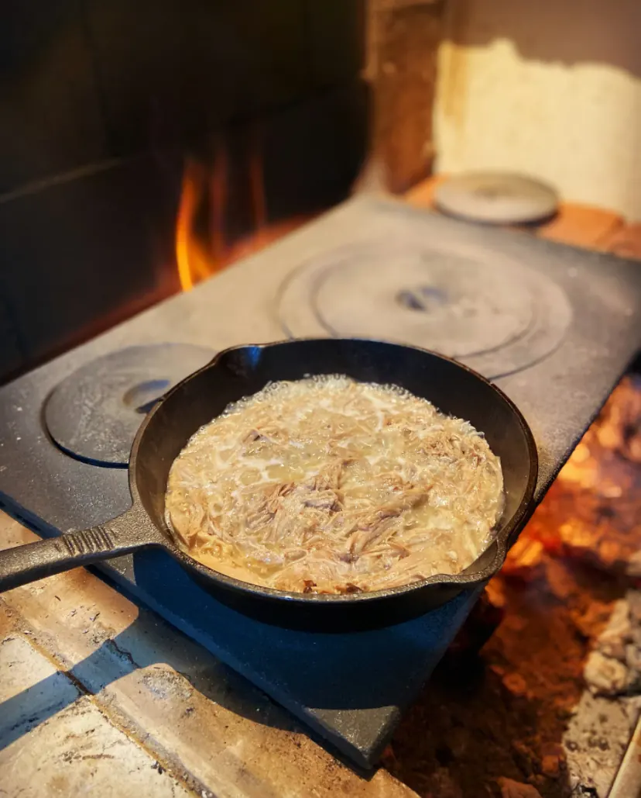
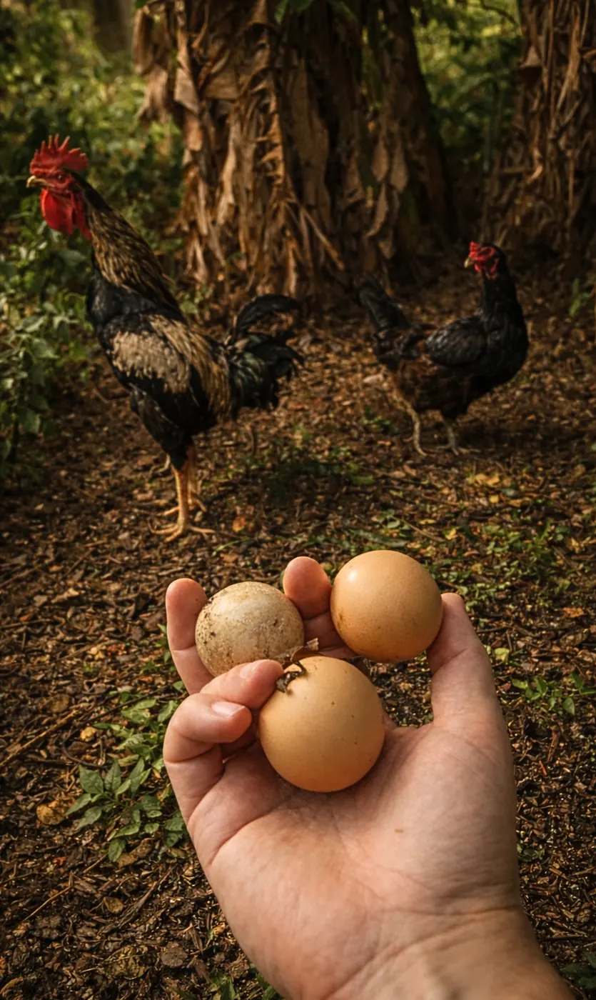

Dia após dia, vamos entendendo o caipirismo
Uma busca cotidiana nos modos de fazer, cozinhar, receber e se relacionar com aquilo que comemos.
O caipira viveu durante muito tempo em um mundo marcado pela proximidade com a terra, pelas estações, pela disponibilidade dos alimentos e por uma economia em grande parte voltada à própria subsistência.
Esse mundo mudou.
O caipirismo que buscamos no Tio Dinho nasce da pergunta sobre o que ainda podemos aprender com alguns daqueles modos de viver, produzir, cozinhar e compartilhar a comida. É uma prática que vamos construindo todos os dias.
O tempo
Há coisas que a cozinha só consegue fazer esperando. Fermentar, curar, conservar, maturar, cozinhar lentamente. Respeitar o tempo também significa reconhecer o ritmo dos ingredientes e das estações.


A terra
Buscamos trabalhar com ingredientes agroecológicos e criar relações próximas com quem produz aquilo que chega à nossa cozinha. Conhecer a origem muda nossa maneira de cozinhar. Terra, território, alimento e cultura fazem parte de uma mesma história.
Diversidade
O campo brasileiro guarda uma enorme diversidade de plantas, sementes, frutas, animais e modos de produzir. Milhos de diferentes cores, frutas pouco conhecidas, plantas espontâneas, meles nativos e outras variedades encontram espaço na nossa cozinha. Diversidade também é sabor.

O alimento inteiro
Folhas, talos, cascas, sementes, aparas e outras partes dos ingredientes podem encontrar novos destinos na cozinha. Caldos, fermentados, conservas, farinhas, molhos e outras preparações nascem desse olhar.
Terra, animal e gente
Um prato começa muito antes da cozinha. Começa no solo, na água, nas plantas, nos animais e nas pessoas que cultivam, criam, colhem, transportam e transformam os alimentos.
Tempo para ficar
A mesa também pede tempo. Tempo para comer, conversar, encontrar alguém ou simplesmente permanecer um pouco mais. Por isso queremos que o Tio Dinho seja também um lugar onde seja possível ficar. Nossa biblioteca está disponível para quem quiser escolher um livro e ler durante a permanência na casa.
Escassez, invenção e memória
Boa parte da cozinha do interior também foi construída diante da escassez. A necessidade ensinou a conservar, aproveitar, substituir e inventar. Produziu sabores e conhecimentos que atravessaram gerações, mas também guarda histórias de pobreza, trabalho duro e privação.
Interessa-nos compreender a inteligência criada diante da dificuldade e descobrir o que ela pode ensinar à cozinha de hoje. A comida permite recontar essas histórias. E, algumas vezes, dar a elas novos sabores.
Uma busca cotidiana
O caipirismo do Tio Dinho acontece nas pequenas escolhas da cozinha. No ingrediente que esperamos chegar. Na conserva que começou semanas atrás. Na parte do alimento que encontra outro uso. Na receita antiga que ganha uma nova leitura. No tempo reservado para sentar à mesa.
Dia após dia, vamos entendendo o caipirismo. Apesar do mundo de hoje.